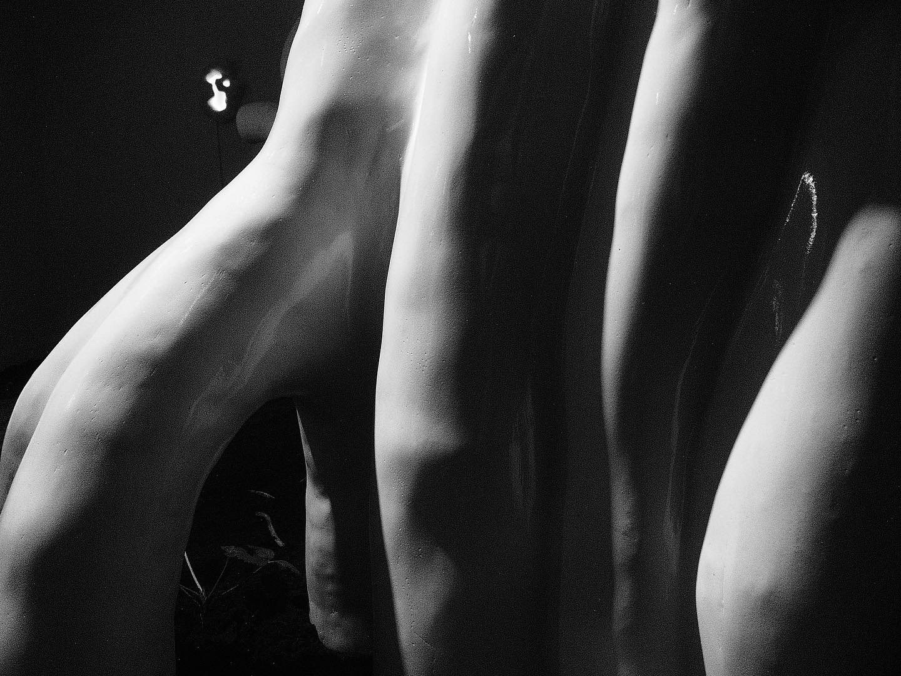
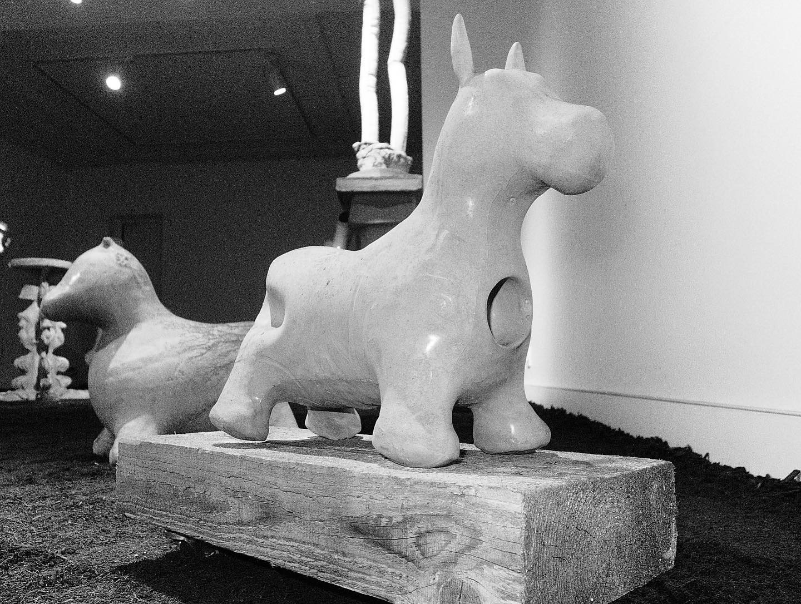
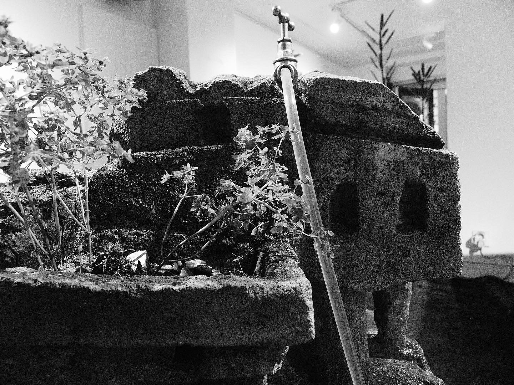
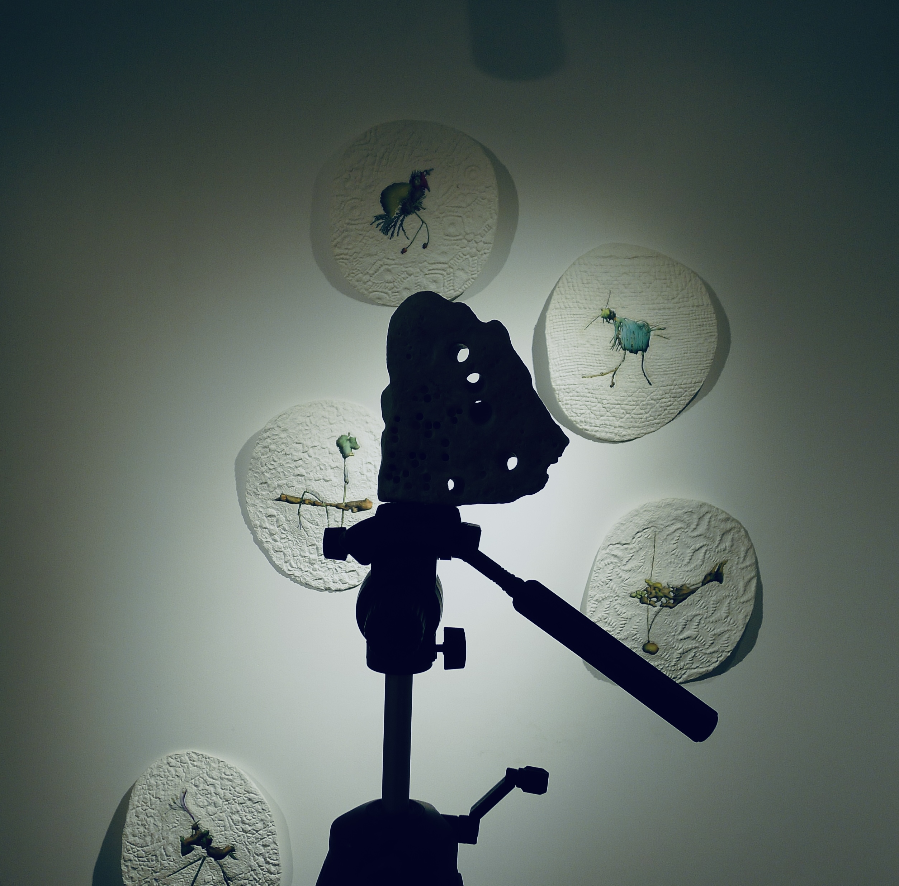
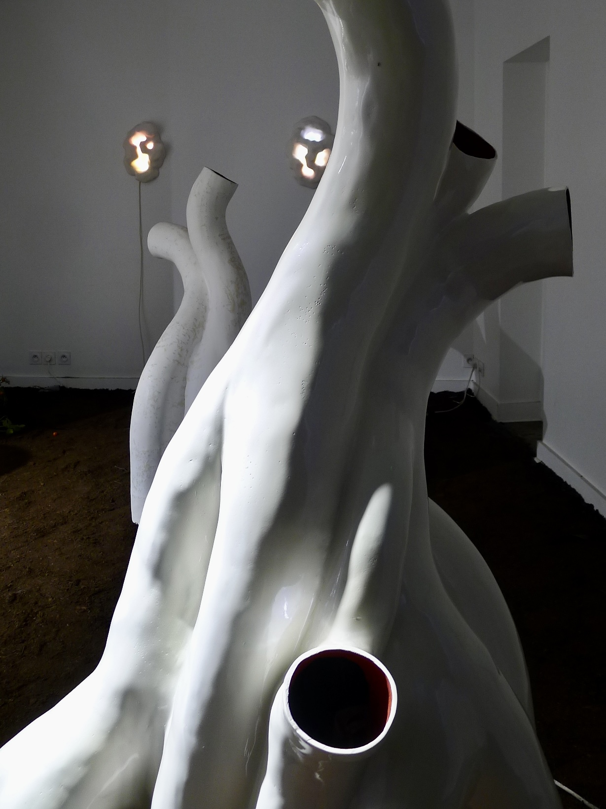

exhibition text
un bon endroit pour cacher un cadavre
A lovely place where a corpse is hidden
Un bon endroit pour cacher un cadavre
ENG
Pygmalion made an ivory statue, loved it and gave it gifts. And one day, during a festival of Aphrodite, the goddess brought the statue to life. Although, one might rather say, she humanized the statue, but did Aphrodite make the statue more alive?
What would really happen if the sculpture came to life? And in what form and time of itself could the sculpture come to life? What if the sculpture came to life as a human being? The sculpture will find itself in the tight and iron embrace of the first and second nature and it will wither in it.
How could a sculpture come to life and become a body? Because to do so you have to imagine a concrete living body into which the sculpture is reincarnated. You need this flesh, but there is no such concrete and free flesh. The sculpture cannot come to life because it is neither dead nor alive. Sculpture is incomparable to life and the vitality of the new sculpture object grows out of the death of life.
Sculptures become concrete objects of unspecified bodies and life and the whole myth of art and Pygmalion is hidden here.
What if sculpture came to life as nature does? Modern sculpture becomes a hyper-object whose animation and manifestation in another life would not be expressed in the same and one space and time. A collapse would occur in which there would not even be enough space for these hyper objects which changed. Sculpture, transformed into nature, could change everything in the world by its process of being.
Let the sculptures flourish in a beautiful place sculpturally. What is the land in this garden?
Once the ground of this garden could have been a whale on three elephants standing on a huge turtle. Now the ground of this garden is the bodies of capitalism, old ideologies, great losses, fears and modern life. These bodies have laid down and fallen asleep in the shape of the earth, have become earth, islands and land and oceans. It is as if everyone is waiting for these bodies to wake up, because they seem to be breathing. But it's not them breathing, it's a beautiful place, and these old bodies are hidden away and there's room to hide more bodies. There are sculptures standing and growing on this ground instead of plants. Paradoxically, modern sculptures turn out to be more alive than everyone else, more alive than us, afraid to wake the never lived, more alive than nature, whose liveliness is so hard to discern for a man speaking in a timid whisper.
Among these sculptures, too, one cannot hide. But what once was not and will not be is hidden here and flourishes under the moon. To the existence of these sculptures one can experience not a frozen, but a heightened and heightened sense of 物の哀れ mono-no avare, a sense of the terrible fascination of things that is not so pronounced when observing both nature and the world of things.
gallery
installation documentation




